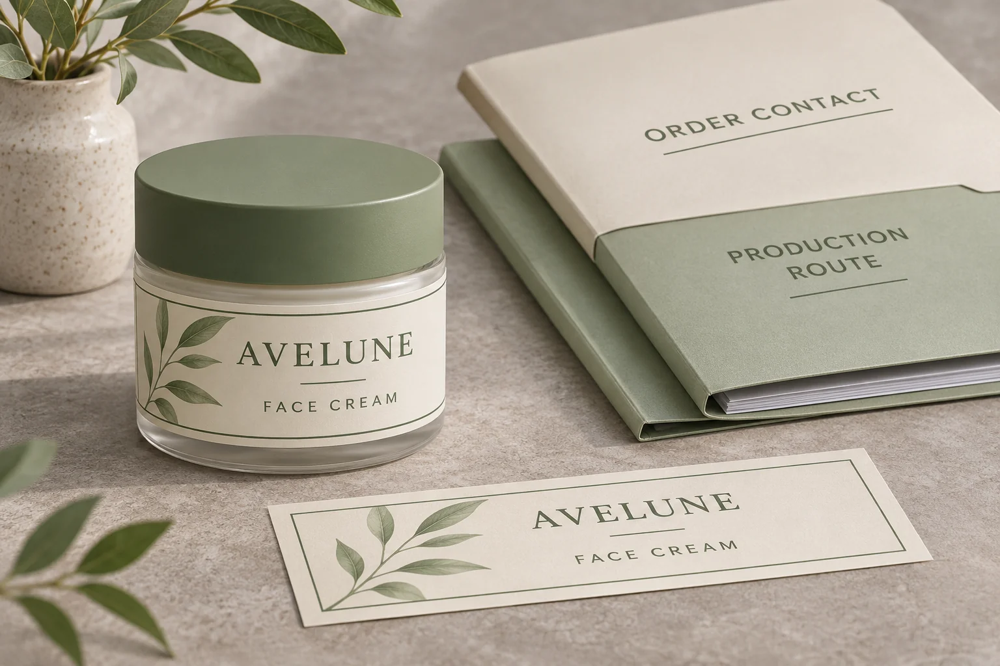
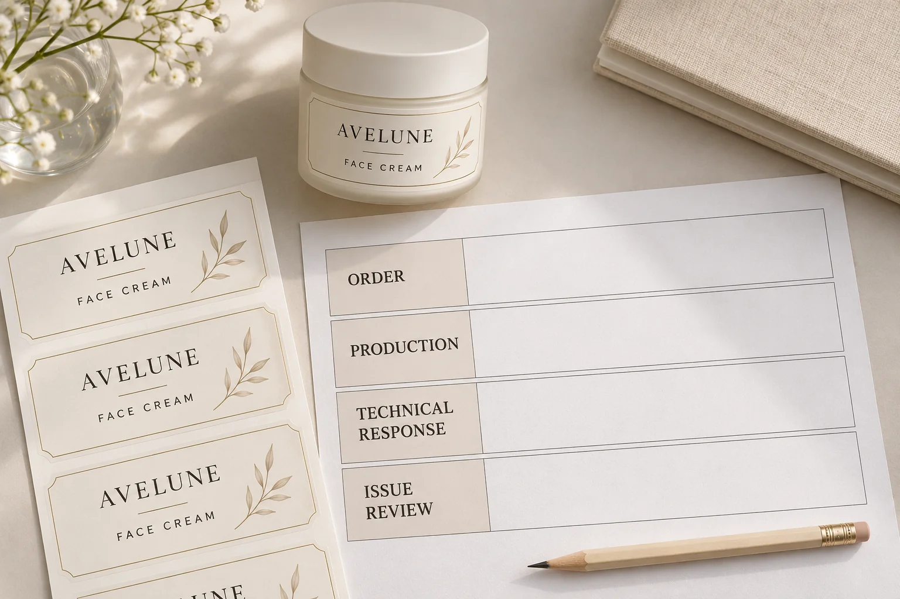

When buying cosmetic labels, ask who accepts the order, who performs the work and who owns the technical response. A direct manufacturer, a print reseller and a production coordinator can involve different handoffs. Select the arrangement from its documented responsibilities and evidence rather than assuming the word factory guarantees lower cost or that a coordinating supplier adds no value.
The decision here is which selling and production arrangement to engage. It is separate from deciding whether the brand or co-packer buys the labels. In either purchasing route, the buyer still needs one understood order scope and a practical way to resolve production questions.

Replace a label with a responsibility map
Start with the legal organization quoting and accepting the order. Ask whether printing, finishing and conversion occur at its own operation, another company or a combination of routes. Then ask who handles file preparation, sample questions, changes and an issue after delivery. Record the response against the actual job rather than assuming every product in a catalog follows the same route.
A named commercial contact can be useful when the scope is clear and that contact can obtain the necessary technical answers. Direct access to an operator may also be useful when a project requires detailed line or construction discussion. The question is whether the arrangement supports the work, not whether every conversation bypasses a commercial team.
LabelsAgent's pricing and ordering FAQ describes its own model as production coordination involving printing partners. That self-description demonstrates an offered operating model; it is not an independent audit of those partners or proof of the provider's cost claims. Do not infer YT's production arrangement from another company's description.
Ask how technical decisions reach production
Identify who can explain the proposed label construction, artwork requirements and supplied format. Ask who obtains a response if a material or process question needs the actual converter's input. Where confidentiality or commercial boundaries limit direct contact, ask what documented response the selling party can provide and how it is tied to the proposed route.
Use the production file handoff guide for confirming the released file. A clear commercial route does not by itself show that the correct artwork reached production. Keep file identity, sample identity and the selling arrangement connected while preserving their different jobs.
If a provider may change the production route, ask which changes require notice and renewed review under the agreed order. Do not presume an unrestricted right to direct a subcontractor or ownership of its working files. Record the actual arrangement and route any contract question to the responsible commercial owner.
Use a supplier responsibility brief
This editorial worksheet helps compare proposals without ranking business models. Ask the quoting party to confirm its part and identify any unresolved response.
| Responsibility | Information to request | Decision to record |
|---|---|---|
| Commercial order | Quoting and accepting entity, scope, contact and acknowledgment. | Which party is responding to the buyer's order? |
| Production route | Relevant printing, finishing and conversion arrangement for this job. | Is the proposed route identified sufficiently for the buyer's approval requirement? |
| Technical and change response | Owner obtaining construction answers, sample references and revision acknowledgment. | Can unresolved requirements reach the responsible production party? |
| Delivery issue | Contact, traceable order/lot references and route for review. | Who coordinates evidence and responds to an affected delivery? |
First identify the commercial party. Next connect the proposed route and technical response, then confirm change and issue handling. Compare the proposals against your required scope and internal capacity. The output is an understood responsibility chain. It is not proof of ownership, an audit finding or a guarantee that no outside production is involved.

Compare arrangements on their actual work
In a hypothetical repeat order with an established construction, a buyer may prefer a direct manufacturing arrangement whose team can supply the required references and handle the accepted order. Confirm included preparation, commercial terms and issue review rather than assuming all of them follow from the manufacturing label.
In a hypothetical range using different supported processes, a coordinator may offer to manage production handoffs and consolidate communication. That work can be useful if the proposed scope identifies the routes, references and response owners. Compare the quoted coordination and remaining buyer work. Do not assume the arrangement is automatically more expensive, cheaper or less accountable.
Conversely, a proposal that leaves both the accepting party and technical response unclear needs clarification regardless of the provider's description. A factory video, a catalog or a list of partner names does not settle which party is accepting your specific requirement.
Keep credentials and product evidence in scope
If your supplier approval requires a management-system certificate, verify the named entity, site and scope through the certificate review process. A document for a production partner should not silently be described as a certificate held by the sales company. Equally, knowing the sales entity does not qualify the label construction on the intended bottle.
Use the quality issue evidence guide if a supplied lot needs review. The contact arrangement should make that review possible, but the actual observation and lot evidence still need to be recorded. This guide assigns no legal liability and offers no universal remedy.
Ask for a clear supply arrangement
For cosmetic labels, send the construction direction, artwork, quantity and application requirements. Ask who will accept the order, how the relevant production and technical responses are coordinated, and which records can accompany the proposal. The form prepares a message; send specifications by email or WhatsApp.
Prepare a supplier scope inquiry